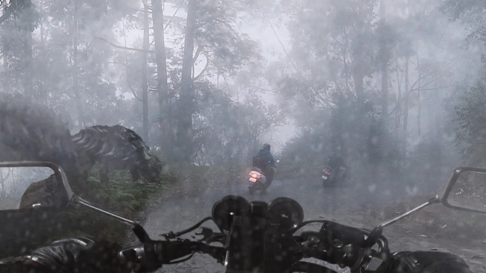

This afternoon, me and some friends were riding our motorbikes through the muddy trails in the rain when we ran into a couple of Ankylosaurs blocking the path. They were just lumbering along, but with the wet ground and low visibility, it was pretty tense. If you’re out riding in this weather, be careful and give these big guys plenty of space—they’re slow but their tail clubs can really hurt if you get too close.

DARK JURASSIC
7 TIPS THAT ARE HIGHLY EFFECTIVE FOR RAPTOR SURVIVAL
Stay Out of Dense Jungle or Tall Grass Raptors use vegetation for stealth. If you can’t see the ground, they’re already too close.
Avoid Traveling Alone Raptors hunt in packs. A lone target is easy prey. Stay in groups and watch each other’s blind spots.
Watch for the Flank, Not the Front Raptors often distract with one member while others circle. If one is staring at you… check your sides.
Secure Doors and Windows Raptors have been shown to open doors. Use heavy locks, barricades, or wedge mechanisms—basic knobs won’t stop them.
Keep Elevation Climb when possible. Raptors aren’t great climbers. Trees, high platforms, or rooftops offer temporary safety.
Limit Noise Loud sounds attract them. If they hear you, they will stalk you. Move quietly and avoid shouting or loud gear.
Use Distractions or Decoys Raptors are smart but still animalistic. Noise traps, motion decoys, or even flares can buy precious seconds.